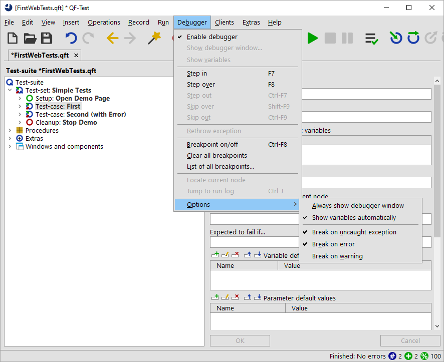
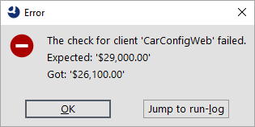

| Version 6.0.3 |
When debugging a test you may want run it until it encounters an error, an exception or sometimes even a warning and then have it pause in debugging mode.
In this section you will see how this can be done while debugging the second test-case.
Afterwards, when you open the debugger menu and options submenu it should look like this:
|
|  | ||
|
| Figure 14.10: Set debugger options to pause on error | ||
We changed the debugger options because with default settings QF-Test will not pause on exceptions or errors, as you saw earlier on.
QF-Test will pause at the faulty node and enter debugging mode:
|
|  |
||
|
| Figure 14.11: Test run stopped by error | ||
The node which halted test execution will be indicated by an arrow and its symbol will be surrounded by a red square. Also, an error dialog will inform you about the failed check.
As always the run-log is the key to resolving errors, so let's open it and find out how to resolve the error in the next section.
|
|  | ||
|
| Figure 14.12: Error Dialog | ||
| Last update: 9/6/2022 Copyright © 2002-2022 Quality First Software GmbH |